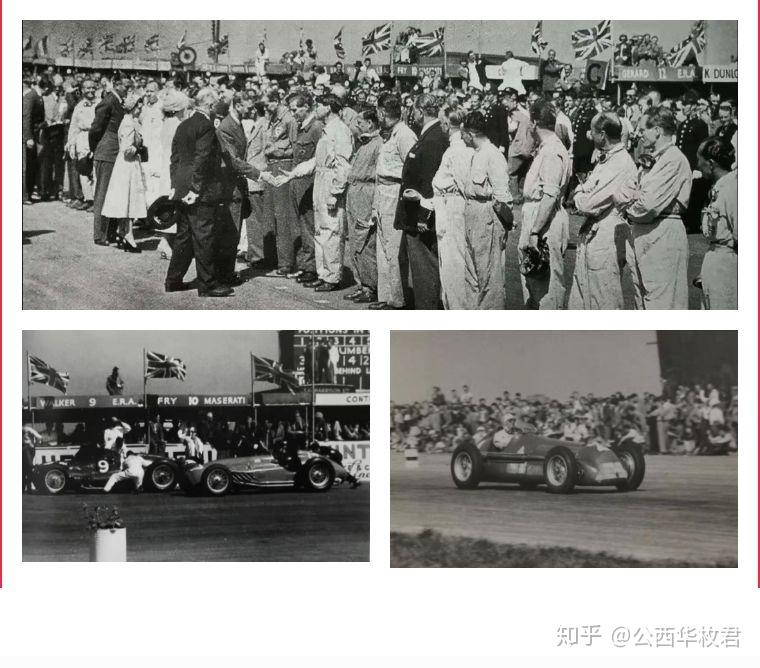
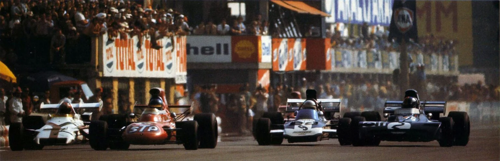
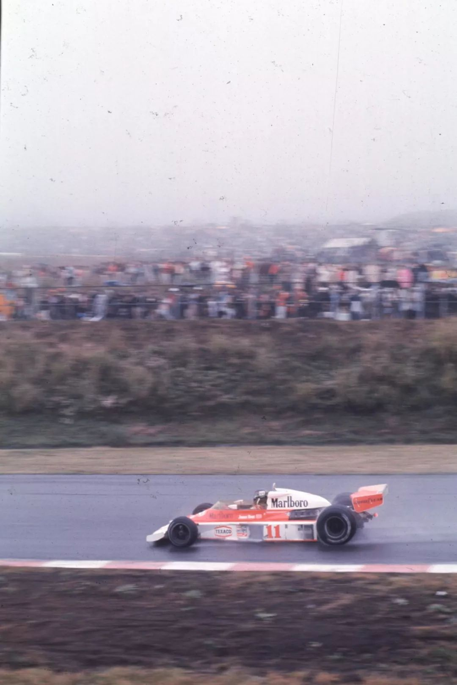
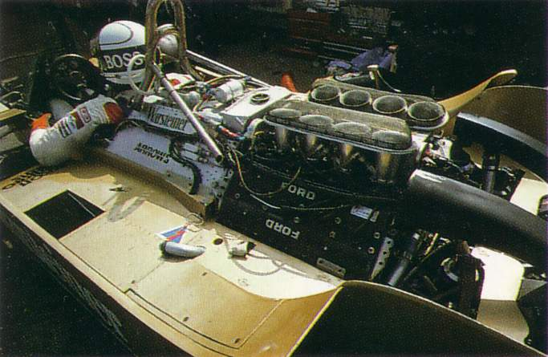
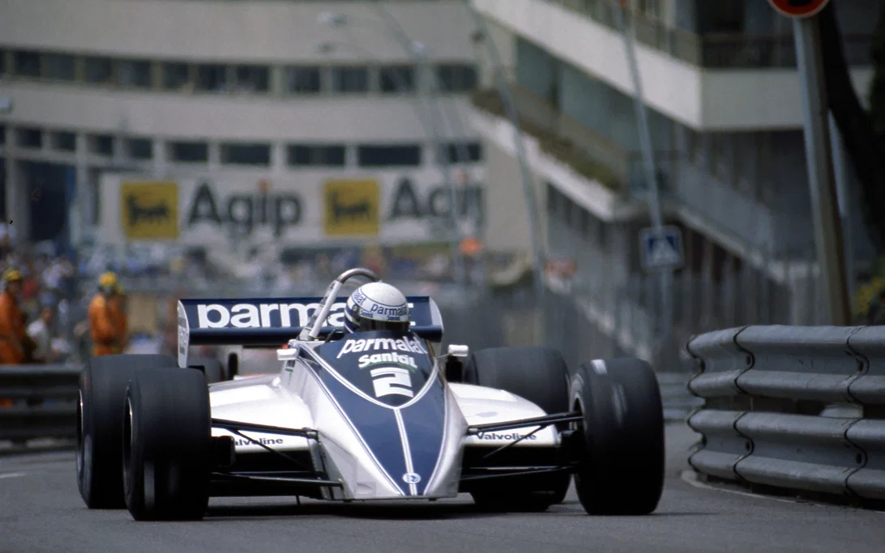
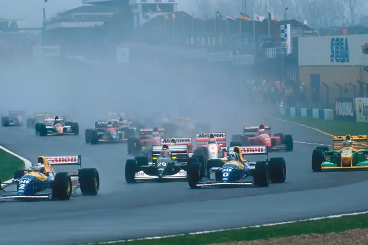
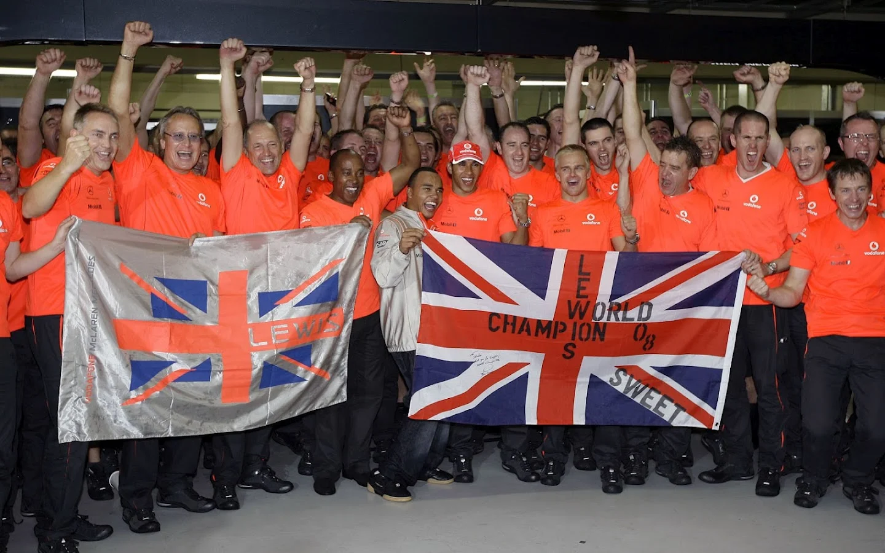
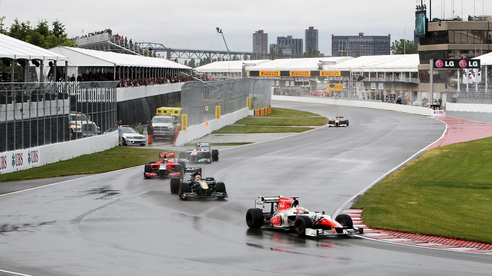
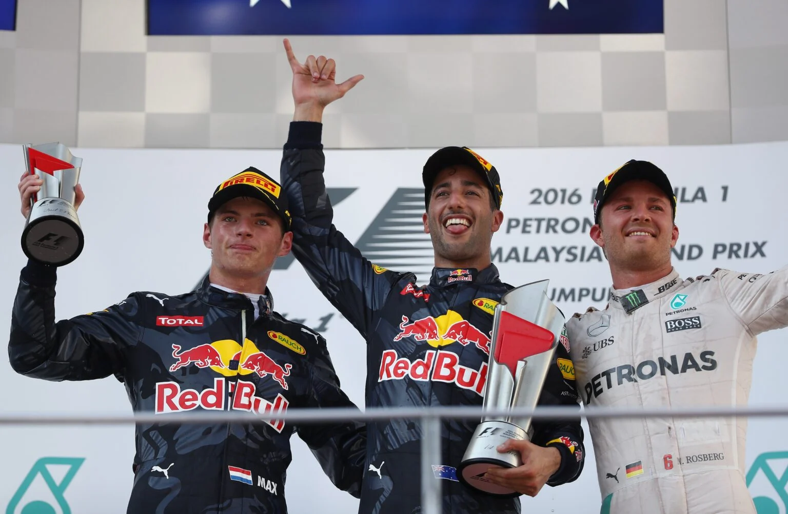
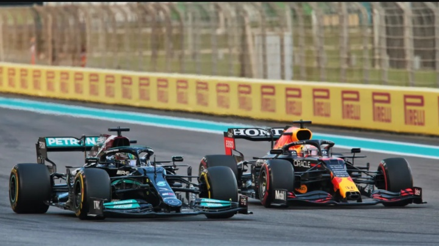

📍 银石赛道，英国
F1世界锦标赛的首场比赛，由意大利车手朱塞佩·法里纳驾驶阿尔法·罗密欧158赛车赢得。 英国国王乔治六世和伊丽莎白王后亲临现场观看，12万观众见证了这一历史时刻。 这场比赛为F1七十余年的传奇历程奠定了基础。
阿尔法·罗密欧车队 · 首位F1世界冠军
📍 纽伯格林赛道，德国
胡安·曼努埃尔·方吉奥在这条22.8公里的赛道上创造了奇迹。驾驶着已经过时的玛莎拉蒂250F， 他在最后几圈连续做出最快圈速，超越了领先的法拉利双雄，赢得了第五个世界冠军。 这位46岁老将的表现被誉为F1历史上最伟大的个人表演之一。
玛莎拉蒂车队 · 五届世界冠军

📍 蒙扎赛道，意大利
F1历史上最接近的完赛成绩。前五名车手在0.61秒内同时冲过终点线！ 彼特·吉ethin赢得胜利，但比赛的真正意义在于展示了赛车运动的极致竞争。 这场比赛证明了F1可以在没有明显领先者的情况下提供最精彩的对决。
BRM车队 · 1971年意大利大奖赛冠军

📍 铃鹿赛道，日本
詹姆斯·亨特与尼基·劳达的冠军争夺战达到高潮。劳达在赛季中经历严重事故后奇迹般复出， 但在日本大奖赛的大雨中，他因安全原因退赛。亨特获得第三名，以一分优势赢得年度总冠军。 这场比赛成为F1历史上最戏剧性的冠军争夺战之一。
迈凯伦车队 · 1976年世界冠军

📍 迪戎赛道，法国
这场比赛标志着F1历史上最重大的技术革命。吉尔·维伦纽夫和队友若迪·斯克特驾驶着法拉利640赛车， 展示了革命性的序列式变速箱。这项技术彻底改变了F1赛车的驾驶方式， 从此所有车队都开始采用半自动变速箱，推动了F1技术的巨大进步。
法拉利车队 · 技术革命先驱

📍 蒙特卡洛赛道，摩纳哥
F1历史上最戏剧性的比赛之一。比赛最后几圈，领先集团的多辆赛车接连出现问题： 帕劳斯·雷尼乌斯因燃油耗尽停车、迪埃特·奎斯特撞车、小马里奥·安德雷蒂机械故障。 最终，经验不足的阿兰·普罗斯特意外获得首个分站冠军，开启了他辉煌的职业生涯。
雷诺车队 · 四届世界冠军

📍 多宁顿公园赛道，英国
埃尔顿·塞纳在这场比赛中展现了他无与伦比的雨战能力。在倾盆大雨中， 他从第五位起步，仅用一圈就超越了所有对手！这一圈被称为F1历史上最伟大的单圈之一。 这场比赛也标志着威廉姆斯车队的强势崛起，以及塞纳与普罗斯特对决的尾声。
威廉姆斯车队 · 三届世界冠军
📍 伊莫拉赛道，意大利
F1历史上最黑暗的周末。拉尔夫·舒马赫在周五练习赛中严重撞车， 奥洛弗·潘尼茨周六排位赛中撞车身亡，周日比赛中埃尔顿·塞纳在高速弯中丧生。 这场悲剧导致F1进行了彻底的安全改革，赛车设计和赛道安全标准发生了根本性变化。
威廉姆斯车队 · 三届世界冠军（1994年5月1日逝世）

📍 英特拉格斯赛道，巴西
刘易斯·汉密尔顿在最后一圈超越蒂莫·格洛克，从第六名跃升至第五名， 以一分优势赢得年度总冠军。这是F1历史上最戏剧性的冠军决定时刻之一， 也是汉密尔顿七个世界冠军中的第一个。
迈凯伦车队 · 七届世界冠军

📍 吉尔·维伦纽夫赛道，加拿大
F1历史上用时最长的比赛，因大雨中断近两小时，总耗时超过4小时。 简森·巴顿在经历6次进站、与队友碰撞、被罚通过维修区后， 在最后一圈超越塞巴斯蒂安·维特尔赢得胜利。这是F1历史上最混乱也最精彩的比赛之一。
迈凯伦车队 · 2009年世界冠军

📍 雪邦赛道，马来西亚
这场比赛是2016年赛季的转折点。刘易斯·汉密尔顿在领先的情况下引擎爆缸退赛， 而队友尼科·罗斯伯格则赢得了比赛。这一结果极大地影响了最终的冠军争夺， 罗斯伯格最终以微弱优势战胜汉密尔顿赢得世界冠军。
梅赛德斯车队 · 2016年世界冠军

📍 亚斯码头赛道，阿联酋
F1历史上最具争议的收官战。马克斯·维斯塔潘在最后一圈超越刘易斯·汉密尔顿， 赢得年度总冠军。比赛最后阶段的安全车处理引发巨大争议， 梅赛德斯车队赛后提出抗议但被驳回。这场比赛改变了F1的格局。
红牛车队 · 世界冠军